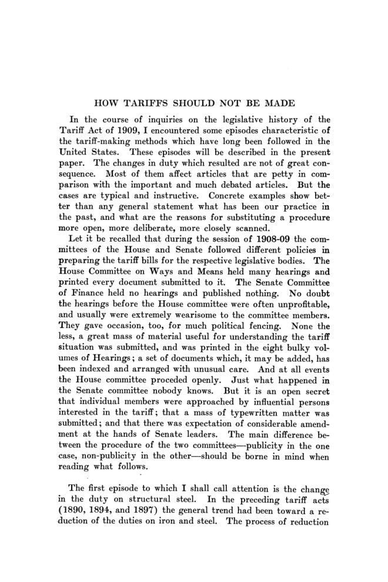

Taussig, 1911: como não se deve fazer uma tarifa
Leitura: 8 min
Aço estrutural, luvas de algodão, alicates e navalhas: quatro episódios da Tarifa de 1909 mostram alíquotas subindo sem audiência nem debate. Taussig pede um órgão permanente de investigação.


Na tarifa americana de 1909, a mudança mais importante no item do aço estrutural não estava nos números. A comissão de finanças do Senado inseriu uma oração restritiva: a alíquota valeria para perfis de ferro ou aço não montados nem trabalhados além de martelados, laminados ou fundidos. Nada na lei tratava do aço já trabalhado. F. W. Taussig procurou o item por todo o texto e concluiu que ele cairia na cláusula geral de manufaturas de ferro e aço. Consultados logo depois da aprovação, funcionários do Tesouro responderam, com alguma hesitação, que esse seria o enquadramento. Para Taussig, era sem dúvida o que se tinha em vista: uma tarifa que parecia baixar havia subido.
O episódio abre o artigo que Taussig, de Harvard, publicou no primeiro número da American Economic Review. Ele estudava a história legislativa da Tarifa de 1909 e encontrou casos de pouca expressão comercial, mas típicos. A diferença de método entre as duas casas é o pano de fundo. A comissão de Ways and Means da Câmara fez audiências e imprimiu tudo o que recebeu, em oito volumes. A comissão de finanças do Senado não fez audiências e nada publicou.
“O que aconteceu exatamente na comissão do Senado, ninguém sabe.” (“Just what happened in the Senate committee nobody knows.”)
O que mudou no aço estrutural?
Ninguém havia pedido o aumento nas audiências da Câmara. Os siderúrgicos falaram, sem muita insistência, contra reduções, e a única manifestação específica sobre o aço estrutural, de um comprador, foi a favor de baixar o imposto. A emenda da comissão foi aceita pelo Senado sem uma palavra de explicação. Taussig escreveu a fabricantes, construtores e importadores e recebeu respostas vagas e contraditórias: para uns, a importação de peças prontas era improvável; para outros, já ocorrera em quantidade e podia chegar a portos como Galveston e Puget Sound quando o frete marítimo estava barato.
Um conhecido experiente sugeriu um acordo de divisão de mercado entre a United States Steel Corporation e o Stahlwerksverband alemão. Taussig não afirma o acordo; diz apenas que é concebível e que explicaria o silêncio dos importadores. Sua suspeita é mais modesta: a concorrência estrangeira ocasional, nos períodos de demanda forte e nas regiões afastadas, não interessava aos produtores domésticos, e a mudança foi arranjada sem ruído para impedi-la.
Quem ganhou com as luvas e os alicates?
O segundo caso é o das luvas de algodão, que pagavam 45% pela cláusula geral da lei de 1897. A Câmara e a comissão do Senado nada mudaram. A alteração veio no plenário do Senado, onde emendas passam na rotina, quase sem debate, e só podem ser desfeitas na comissão de conferência. A nova regra trocou o imposto simples sobre o valor por um imposto composto, em parte específico e em parte ad valorem, que pesa sobretudo sobre as luvas baratas.
As luvas baratas, importadas sobretudo da Alemanha, eram usadas por policiais, fuzileiros e milícias em ocasiões de gala e compradas principalmente por órgãos públicos. Segundo os informantes de Taussig, o imposto entrou pela ação de um fabricante com acesso a um senador da Nova Inglaterra da comissão de finanças. Na conferência, a regra foi restrita a luvas masculinas e de meninos, e as femininas voltaram a pagar 45%. Taussig comenta, com ironia, que consegue encarar sem abalo patriótico a hipótese de soldados de luvas alemãs.
No caso dos alicates e torqueses, também tributados antes pela cláusula geral, o Senado introduziu um imposto composto, fixado na lei em oito centavos por libra mais 40%. O pedido partira de uma empresa de Utica, recusado na Câmara, e foi patrocinado no Senado por uma autoridade do alto escalão administrativo, que não era senador. As planilhas de custo apresentadas eram, nas palavras do autor, peças pro forma. O efeito foi o habitual nos impostos compostos: pouco peso sobre os alicates pequenos e leves, que continuaram a ser importados, e muito sobre os grandes, cuja importação caiu.
Quantas fábricas de navalhas havia?
O episódio das navalhas teve debate público, e por isso rendeu outro tipo de lição. No Senado, afirmou-se que o país tivera sessenta ou setenta fábricas e que restavam cinco. Taussig apurou a origem: fabricantes disseram a um senador que eram seis ou sete; ele entendeu sessenta e sete e assim falou em plenário. O número foi repetido por outros senadores e ficou no Congressional Record, à espera, diz o autor, do historiador que um dia o tome como fonte original.
O caso interessa também pela teoria. Taussig explicava as importações e exportações cruzadas de ferragens pela vantagem comparativa: o que se faz à máquina, em grande escala e padrão uniforme, os Estados Unidos produzem barato e até exportam; o que depende de trabalho artesanal vem de fora. As navalhas de modelo antigo pareciam caber nessa regra. Os informantes mostraram que não: os alemães haviam mecanizado a forja e a afiação, enquanto os americanos seguiam métodos ingleses. O que faltava aos produtores domésticos, conclui, era iniciativa e habilidade, não impostos mais altos.
“Uma demanda por impostos extremos é sempre suspeita.” (“A demand for extreme duties is always suspicious.”)
A combinação de taxa específica e ad valorem, observa Taussig, esconde e ao mesmo tempo produz impostos de 75% a 100%. Quando os produtores pedem uma desvantagem desse tamanho para os concorrentes, a presunção é contra eles: ou fazem algo para o qual o país não é talhado, ou estão atrasados em seu próprio ramo.
O que Taussig propõe?
Ele separa duas perguntas. Se os aumentos eram convenientes depende da opinião de cada um sobre a proteção. O método é outra questão. O protecionista dirá que é o jeito do mundo, ou ao menos do Congresso americano, onde tarifas são tratadas como verbas de rios e portos. O adversário da proteção verá corrupção, e provavelmente se engana: os legisladores raramente têm interesse pecuniário, e a única corrupção relevante seriam as contribuições aos partidos, que doadores e beneficiários podem defender de boa-fé. O problema, para Taussig, é de procedimento.
A proposta tem duas partes. Primeiro, publicidade: aumentos feitos às claras, com razões declaradas, e com o país sabendo de antemão o que cada dispositivo significa. Depois, um órgão permanente, equipado para investigar e para relatar com isenção o significado das mudanças propostas, porque as comissões do Congresso, sobrecarregadas de audiências comprimidas em poucas semanas, não têm como examinar tudo.
“Que não haja mais jokers.” (“Let there be no more jokers.”)
Na minha leitura
Na minha leitura, a força do artigo está no método. Taussig não discute a proteção em abstrato; reconstrói, item por item, quem pediu, quem decidiu e qual foi o efeito sobre o preço de importação. Os quatro casos têm a mesma estrutura econômica: um benefício concentrado em poucos produtores, um custo diluído entre muitos compradores e uma redação técnica, como a oração restritiva ou o imposto composto, que torna o custo invisível para quem não conhece o ramo. A opacidade, aqui, não é acidente do processo; é o instrumento.
A proposta final, um corpo técnico permanente que investigue e publique antes da votação, não resolve a questão de mérito, e Taussig sabe disso. Ela muda o custo de aprovar um dispositivo que não resiste à exposição. É um argumento sobre informação e não sobre ideologia tarifária, e por isso continua utilizável por quem discorde dele sobre a proteção.
Glossário
- Imposto ad valorem
- tributo cobrado como percentual do valor da mercadoria importada.
- Imposto específico
- tributo cobrado por unidade física (libra, dúzia, peça), independentemente do preço.
- Imposto composto
- soma de um imposto específico com um ad valorem; pesa mais, em proporção, sobre os bens baratos.
- Cláusula geral (drag-net)
- item residual da tarifa, para manufaturas não previstas em outro lugar (“not otherwise provided for”).
- Joker
- na gíria legislativa americana, dispositivo de redação cujo efeito real não aparece à primeira leitura.
- Comissão de conferência
- comissão mista que concilia os textos aprovados pela Câmara e pelo Senado.
- Vantagem comparativa
- capacidade de produzir um bem a custo relativo menor que o de outros países, mesmo com salários mais altos.
Fontes
- How Tariffs Should Not Be Made — F. W. Taussig (Harvard University) (pp. 20–32). JSTOR · Internet Archive (PDF)
- Edição completa, com os demais artigos: Nº 112 do Arquivo.
Documento em domínio público (EUA, publicado antes de 1931), via JSTOR Early Journal Content e Internet Archive. Resumo e comentário do autor deste site, sem afiliação com a American Economic Association. Encontrou um erro? Escreva: a correção é publicada no próprio texto, com data.
↑ Nº 112 · A primeira American Economic Review: tarifas, juros e irrigação Kemmerer, 1911: as cinco estações do dinheiro em Nova York →